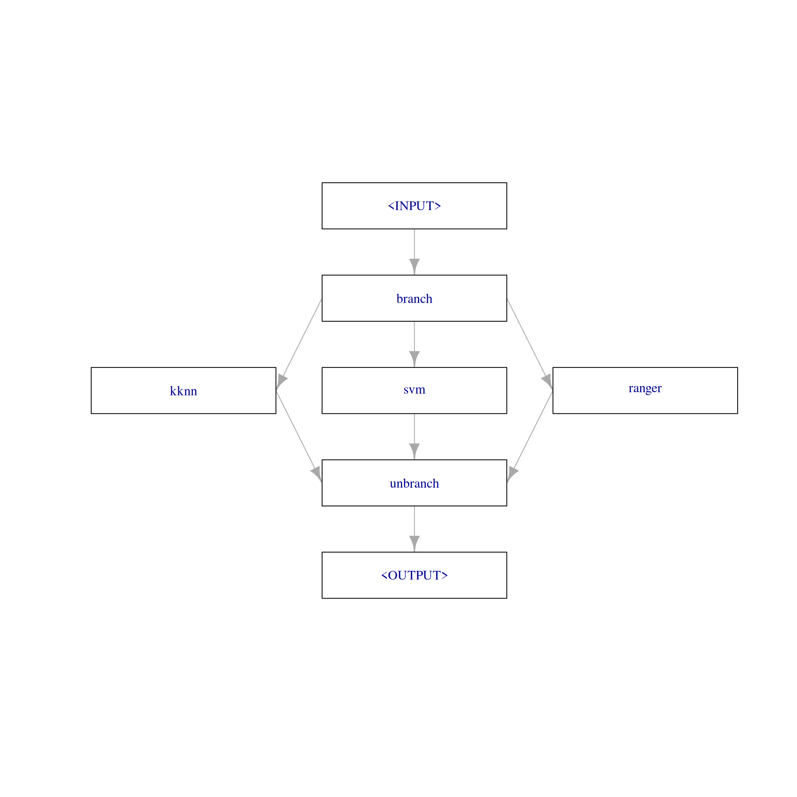
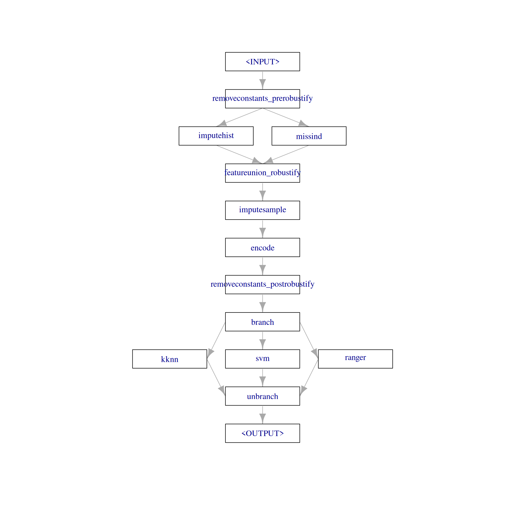
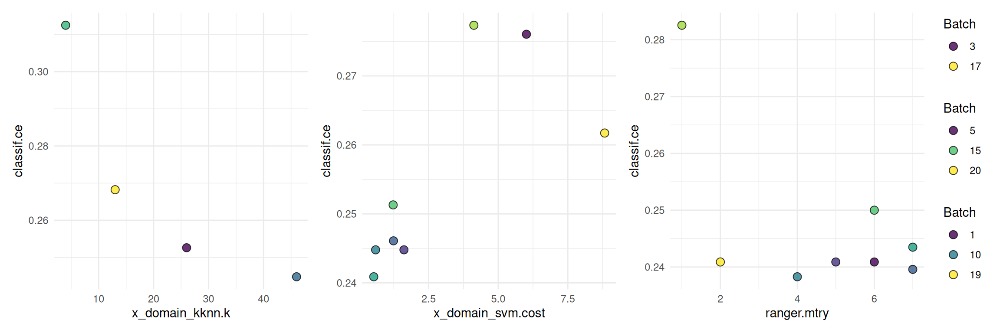

library(mlr3verse)Scope
This is the third part of the practical tuning series. The other parts can be found here:
- Part I - Tune a Support Vector Machine
- Part II - Tune a Preprocessing Pipeline
- Part IV - Tuning and Parallel Processing
In this post, we implement a simple automated machine learning (AutoML) system which includes preprocessing, a switch between multiple learners and hyperparameter tuning. For this, we build a pipeline with the mlr3pipelines extension package. Additionally, we use nested resampling to get an unbiased performance estimate of our AutoML system.
Prerequisites
We load the mlr3verse package which pulls in the most important packages for this example.
We initialize the random number generator with a fixed seed for reproducibility, and decrease the verbosity of the logger to keep the output clearly represented. The lgr package is used for logging in all mlr3 packages. The mlr3 logger prints the logging messages from the base package, whereas the bbotk logger is responsible for logging messages from the optimization packages (e.g. mlr3tuning ).
set.seed(7832)
lgr::get_logger("mlr3")$set_threshold("warn")
lgr::get_logger("bbotk")$set_threshold("warn")In this example, we use the Pima Indians Diabetes data set which is used to to predict whether or not a patient has diabetes. The patients are characterized by 8 numeric features and some have missing values.
task = tsk("pima")Branching
We use three popular machine learning algorithms: k-nearest-neighbors, support vector machines and random forests.
learners = list(
lrn("classif.kknn", id = "kknn"),
lrn("classif.svm", id = "svm", type = "C-classification"),
lrn("classif.ranger", id = "ranger")
)The PipeOpBranch allows us to specify multiple alternatives paths. In this graph, the paths lead to the different learner models. The selection hyperparameter controls which path is executed i.e., which learner is used to fit a model. It is important to use the PipeOpBranch after the branching so that the outputs are merged into one result object. We visualize the graph with branching below.
graph =
po("branch", options = c("kknn", "svm", "ranger")) %>>%
gunion(lapply(learners, po)) %>>%
po("unbranch")
graph$plot(html = FALSE)
Alternatively, we can use the ppl()-shortcut to load a predefined graph from the mlr_graphs dictionary. For this, the learner list must be named.
learners = list(
kknn = lrn("classif.kknn", id = "kknn"),
svm = lrn("classif.svm", id = "svm", type = "C-classification"),
ranger = lrn("classif.ranger", id = "ranger")
)
graph = ppl("branch", lapply(learners, po))Preprocessing
The task has missing data in five columns.
round(task$missings() / task$nrow, 2)diabetes age glucose insulin mass pedigree pregnant pressure triceps
0.00 0.00 0.01 0.49 0.01 0.00 0.00 0.05 0.30 The pipeline "robustify" function creates a preprocessing pipeline based on our task. The resulting pipeline imputes missing values with PipeOpImputeHist and creates a dummy column (PipeOpMissInd) which indicates the imputed missing values. Internally, this creates two paths and the results are combined with PipeOpFeatureUnion. In contrast to PipeOpBranch, both paths are executed. Additionally, "robustify" adds PipeOpEncode to encode factor columns and PipeOpRemoveConstants to remove features with a constant value.
graph = ppl("robustify", task = task, factors_to_numeric = TRUE) %>>%
graph
plot(graph, html = FALSE)
We could also create the preprocessing pipeline manually.
gunion(list(po("imputehist"),
po("missind", affect_columns = selector_type(c("numeric", "integer"))))) %>>%
po("featureunion") %>>%
po("encode") %>>%
po("removeconstants")Graph with 5 PipeOps:
ID State sccssors prdcssors
<char> <char> <char> <char>
imputehist <<UNTRAINED>> featureunion
missind <<UNTRAINED>> featureunion
featureunion <<UNTRAINED>> encode imputehist,missind
encode <<UNTRAINED>> removeconstants featureunion
removeconstants <<UNTRAINED>> encodeGraph Learner
We use as_learner() to create a GraphLearner which encapsulates the pipeline and can be used like a learner.
graph_learner = as_learner(graph)The parameter set of the graph learner includes all hyperparameters from all contained learners. The hyperparameter ids are prefixed with the corresponding learner ids. The hyperparameter branch.selection controls which learner is used.
as.data.table(graph_learner$param_set)[, .(id, class, lower, upper, nlevels)] id class lower upper nlevels
<char> <char> <num> <num> <num>
1: removeconstants_prerobustify.ratio ParamDbl 0 1 Inf
2: removeconstants_prerobustify.rel_tol ParamDbl 0 Inf Inf
3: removeconstants_prerobustify.abs_tol ParamDbl 0 Inf Inf
4: removeconstants_prerobustify.na_ignore ParamLgl NA NA 2
5: removeconstants_prerobustify.affect_columns ParamUty NA NA Inf
6: imputehist.affect_columns ParamUty NA NA Inf
7: missind.which ParamFct NA NA 2
8: missind.type ParamFct NA NA 4
9: missind.affect_columns ParamUty NA NA Inf
10: imputesample.affect_columns ParamUty NA NA Inf
11: encode.method ParamFct NA NA 5
12: encode.affect_columns ParamUty NA NA Inf
13: removeconstants_postrobustify.ratio ParamDbl 0 1 Inf
14: removeconstants_postrobustify.rel_tol ParamDbl 0 Inf Inf
15: removeconstants_postrobustify.abs_tol ParamDbl 0 Inf Inf
16: removeconstants_postrobustify.na_ignore ParamLgl NA NA 2
17: removeconstants_postrobustify.affect_columns ParamUty NA NA Inf
18: kknn.k ParamInt 1 Inf Inf
19: kknn.distance ParamDbl 0 Inf Inf
20: kknn.kernel ParamFct NA NA 10
21: kknn.scale ParamLgl NA NA 2
22: kknn.ykernel ParamUty NA NA Inf
23: kknn.store_model ParamLgl NA NA 2
24: svm.cachesize ParamDbl -Inf Inf Inf
25: svm.class.weights ParamUty NA NA Inf
26: svm.coef0 ParamDbl -Inf Inf Inf
27: svm.cost ParamDbl 0 Inf Inf
28: svm.cross ParamInt 0 Inf Inf
29: svm.decision.values ParamLgl NA NA 2
30: svm.degree ParamInt 1 Inf Inf
31: svm.epsilon ParamDbl 0 Inf Inf
32: svm.fitted ParamLgl NA NA 2
33: svm.gamma ParamDbl 0 Inf Inf
34: svm.kernel ParamFct NA NA 4
35: svm.nu ParamDbl -Inf Inf Inf
36: svm.scale ParamUty NA NA Inf
37: svm.shrinking ParamLgl NA NA 2
38: svm.tolerance ParamDbl 0 Inf Inf
39: svm.type ParamFct NA NA 2
40: ranger.alpha ParamDbl -Inf Inf Inf
41: ranger.always.split.variables ParamUty NA NA Inf
42: ranger.class.weights ParamUty NA NA Inf
43: ranger.holdout ParamLgl NA NA 2
44: ranger.importance ParamFct NA NA 4
45: ranger.keep.inbag ParamLgl NA NA 2
46: ranger.max.depth ParamInt 0 Inf Inf
47: ranger.min.bucket ParamInt 1 Inf Inf
48: ranger.min.node.size ParamInt 1 Inf Inf
49: ranger.minprop ParamDbl -Inf Inf Inf
50: ranger.mtry ParamInt 1 Inf Inf
51: ranger.mtry.ratio ParamDbl 0 1 Inf
52: ranger.num.random.splits ParamInt 1 Inf Inf
53: ranger.node.stats ParamLgl NA NA 2
54: ranger.num.threads ParamInt 1 Inf Inf
55: ranger.num.trees ParamInt 1 Inf Inf
56: ranger.oob.error ParamLgl NA NA 2
57: ranger.regularization.factor ParamUty NA NA Inf
58: ranger.regularization.usedepth ParamLgl NA NA 2
59: ranger.replace ParamLgl NA NA 2
60: ranger.respect.unordered.factors ParamFct NA NA 3
61: ranger.sample.fraction ParamDbl 0 1 Inf
62: ranger.save.memory ParamLgl NA NA 2
63: ranger.scale.permutation.importance ParamLgl NA NA 2
64: ranger.se.method ParamFct NA NA 2
65: ranger.seed ParamInt -Inf Inf Inf
66: ranger.split.select.weights ParamUty NA NA Inf
67: ranger.splitrule ParamFct NA NA 3
68: ranger.verbose ParamLgl NA NA 2
69: ranger.write.forest ParamLgl NA NA 2
70: branch.selection ParamFct NA NA 3
id class lower upper nlevelsTune the pipeline
We will only tune one hyperparameter for each learner in this example. Additionally, we tune the branching parameter which selects one of the three learners. We have to specify that a hyperparameter is only valid for a certain learner by using depends = branch.selection == <learner_id>.
# branch
graph_learner$param_set$values$branch.selection =
to_tune(c("kknn", "svm", "ranger"))
# kknn
graph_learner$param_set$values$kknn.k =
to_tune(p_int(3, 50, logscale = TRUE, depends = branch.selection == "kknn"))
# svm
graph_learner$param_set$values$svm.cost =
to_tune(p_dbl(-1, 1, trafo = function(x) 10^x, depends = branch.selection == "svm"))
# ranger
graph_learner$param_set$values$ranger.mtry =
to_tune(p_int(1, 8, depends = branch.selection == "ranger"))
# short learner id for printing
graph_learner$id = "graph_learner"We define a tuning instance and select a random search which is stopped after 20 evaluated configurations.
instance = tune(
tuner = tnr("random_search"),
task = task,
learner = graph_learner,
resampling = rsmp("cv", folds = 3),
measure = msr("classif.ce"),
term_evals = 20
)The following shows a quick way to visualize the tuning results.
autoplot(instance, type = "marginal",
cols_x = c("x_domain_kknn.k", "x_domain_svm.cost", "ranger.mtry"))
Final Model
We add the optimized hyperparameters to the graph learner and train the learner on the full dataset.
learner = as_learner(graph)
learner$param_set$values = instance$result_learner_param_vals
learner$train(task)The trained model can now be used to make predictions on new data. A common mistake is to report the performance estimated on the resampling sets on which the tuning was performed (instance$result_y) as the model’s performance. Instead we have to use nested resampling to get an unbiased performance estimate.
Nested Resampling
We use nested resampling to get an unbiased estimate of the predictive performance of our graph learner.
graph_learner = as_learner(graph)
graph_learner$param_set$values$branch.selection =
to_tune(c("kknn", "svm", "ranger"))
graph_learner$param_set$values$kknn.k =
to_tune(p_int(3, 50, logscale = TRUE, depends = branch.selection == "kknn"))
graph_learner$param_set$values$svm.cost =
to_tune(p_dbl(-1, 1, trafo = function(x) 10^x, depends = branch.selection == "svm"))
graph_learner$param_set$values$ranger.mtry =
to_tune(p_int(1, 8, depends = branch.selection == "ranger"))
graph_learner$id = "graph_learner"
inner_resampling = rsmp("cv", folds = 3)
at = auto_tuner(
learner = graph_learner,
resampling = inner_resampling,
measure = msr("classif.ce"),
terminator = trm("evals", n_evals = 10),
tuner = tnr("random_search")
)
outer_resampling = rsmp("cv", folds = 3)
rr = resample(task, at, outer_resampling, store_models = TRUE)We check the inner tuning results for stable hyperparameters. This means that the selected hyperparameters should not vary too much. We might observe unstable models in this example because the small data set and the low number of resampling iterations might introduce too much randomness. Usually, we aim for the selection of stable hyperparameters for all outer training sets.
extract_inner_tuning_results(rr)Next, we want to compare the predictive performances estimated on the outer resampling to the inner resampling. Significantly lower predictive performances on the outer resampling indicate that the models with the optimized hyperparameters overfit the data.
rr$score()[, .(iteration, task_id, learner_id, resampling_id, classif.ce)] iteration task_id learner_id resampling_id classif.ce
<int> <char> <char> <char> <num>
1: 1 pima graph_learner.tuned cv 0.2695312
2: 2 pima graph_learner.tuned cv 0.2578125
3: 3 pima graph_learner.tuned cv 0.2343750The aggregated performance of all outer resampling iterations is essentially the unbiased performance of the graph learner with optimal hyperparameter found by random search.
rr$aggregate()classif.ce
0.2539062 Applying nested resampling can be shortened by using the tune_nested()-shortcut.
graph_learner = as_learner(graph)
graph_learner$param_set$values$branch.selection =
to_tune(c("kknn", "svm", "ranger"))
graph_learner$param_set$values$kknn.k =
to_tune(p_int(3, 50, logscale = TRUE, depends = branch.selection == "kknn"))
graph_learner$param_set$values$svm.cost =
to_tune(p_dbl(-1, 1, trafo = function(x) 10^x, depends = branch.selection == "svm"))
graph_learner$param_set$values$ranger.mtry =
to_tune(p_int(1, 8, depends = branch.selection == "ranger"))
graph_learner$id = "graph_learner"
rr = tune_nested(
tuner = tnr("random_search"),
task = task,
learner = graph_learner,
inner_resampling = rsmp("cv", folds = 3),
outer_resampling = rsmp("cv", folds = 3),
measure = msr("classif.ce"),
term_evals = 10,
)Resources
The mlr3book includes chapters on pipelines and hyperparameter tuning. The mlr3cheatsheets contain frequently used commands and workflows of mlr3.
Session Information
sessioninfo::session_info(info = "packages")═ Session info ═══════════════════════════════════════════════════════════════════════════════════════════════════════
─ Packages ───────────────────────────────────────────────────────────────────────────────────────────────────────────
! package * version date (UTC) lib source
backports 1.5.0 2024-05-23 [1] CRAN (R 4.4.1)
bbotk 1.1.1 2024-10-15 [1] CRAN (R 4.4.1)
bslib 0.8.0 2024-07-29 [1] CRAN (R 4.4.1)
cachem 1.1.0 2024-05-16 [1] CRAN (R 4.4.1)
checkmate 2.3.2 2024-07-29 [1] CRAN (R 4.4.1)
P class 7.3-22 2023-05-03 [?] CRAN (R 4.4.0)
cli 3.6.3 2024-06-21 [1] CRAN (R 4.4.1)
clue 0.3-65 2023-09-23 [1] CRAN (R 4.4.1)
P cluster 2.1.6 2023-12-01 [?] CRAN (R 4.4.0)
P codetools 0.2-20 2024-03-31 [?] CRAN (R 4.4.0)
colorspace 2.1-1 2024-07-26 [1] CRAN (R 4.4.1)
crayon 1.5.3 2024-06-20 [1] CRAN (R 4.4.1)
crosstalk 1.2.1 2023-11-23 [1] CRAN (R 4.4.1)
data.table * 1.16.2 2024-10-10 [1] CRAN (R 4.4.1)
DEoptimR 1.1-3 2023-10-07 [1] CRAN (R 4.4.1)
digest 0.6.37 2024-08-19 [1] CRAN (R 4.4.1)
diptest 0.77-1 2024-04-10 [1] CRAN (R 4.4.1)
dplyr 1.1.4 2023-11-17 [1] CRAN (R 4.4.1)
DT 0.33 2024-04-04 [1] CRAN (R 4.4.1)
e1071 1.7-16 2024-09-16 [1] CRAN (R 4.4.1)
evaluate 1.0.1 2024-10-10 [1] CRAN (R 4.4.1)
fansi 1.0.6 2023-12-08 [1] CRAN (R 4.4.1)
farver 2.1.2 2024-05-13 [1] CRAN (R 4.4.1)
fastmap 1.2.0 2024-05-15 [1] CRAN (R 4.4.1)
flexmix 2.3-19 2023-03-16 [1] CRAN (R 4.4.1)
fpc 2.2-13 2024-09-24 [1] CRAN (R 4.4.1)
future 1.34.0 2024-07-29 [1] CRAN (R 4.4.1)
future.apply 1.11.2 2024-03-28 [1] CRAN (R 4.4.1)
generics 0.1.3 2022-07-05 [1] CRAN (R 4.4.1)
ggplot2 3.5.1 2024-04-23 [1] CRAN (R 4.4.1)
globals 0.16.3 2024-03-08 [1] CRAN (R 4.4.1)
glue 1.8.0 2024-09-30 [1] CRAN (R 4.4.1)
gtable 0.3.5 2024-04-22 [1] CRAN (R 4.4.1)
htmltools 0.5.8.1 2024-04-04 [1] CRAN (R 4.4.1)
htmlwidgets 1.6.4 2023-12-06 [1] CRAN (R 4.4.1)
igraph 2.0.3 2024-03-13 [1] CRAN (R 4.4.1)
jquerylib 0.1.4 2021-04-26 [1] CRAN (R 4.4.1)
jsonlite 1.8.9 2024-09-20 [1] CRAN (R 4.4.1)
kernlab 0.9-33 2024-08-13 [1] CRAN (R 4.4.1)
kknn 1.3.1 2016-03-26 [1] CRAN (R 4.4.1)
knitr 1.48 2024-07-07 [1] CRAN (R 4.4.1)
labeling 0.4.3 2023-08-29 [1] CRAN (R 4.4.1)
P lattice 0.22-5 2023-10-24 [?] CRAN (R 4.3.3)
lgr 0.4.4 2022-09-05 [1] CRAN (R 4.4.1)
lifecycle 1.0.4 2023-11-07 [1] CRAN (R 4.4.1)
listenv 0.9.1 2024-01-29 [1] CRAN (R 4.4.1)
magrittr 2.0.3 2022-03-30 [1] CRAN (R 4.4.1)
P MASS 7.3-61 2024-06-13 [?] CRAN (R 4.4.1)
P Matrix 1.7-0 2024-04-26 [?] CRAN (R 4.4.0)
mclust 6.1.1 2024-04-29 [1] CRAN (R 4.4.1)
mlr3 * 0.21.1 2024-10-18 [1] CRAN (R 4.4.1)
mlr3cluster 0.1.10 2024-10-03 [1] CRAN (R 4.4.1)
mlr3data 0.7.0 2023-06-29 [1] CRAN (R 4.4.1)
mlr3extralearners 0.9.0-9000 2024-10-18 [1] Github (mlr-org/mlr3extralearners@a622524)
mlr3filters 0.8.0 2024-04-10 [1] CRAN (R 4.4.1)
mlr3fselect 1.1.1.9000 2024-10-18 [1] Github (mlr-org/mlr3fselect@e917a02)
mlr3hyperband 0.6.0 2024-06-29 [1] CRAN (R 4.4.1)
mlr3learners 0.7.0 2024-06-28 [1] CRAN (R 4.4.1)
mlr3mbo 0.2.6 2024-10-16 [1] CRAN (R 4.4.1)
mlr3measures 1.0.0 2024-09-11 [1] CRAN (R 4.4.1)
mlr3misc 0.15.1 2024-06-24 [1] CRAN (R 4.4.1)
mlr3pipelines 0.7.0 2024-09-24 [1] CRAN (R 4.4.1)
mlr3tuning 1.0.2 2024-10-14 [1] CRAN (R 4.4.1)
mlr3tuningspaces 0.5.1 2024-06-21 [1] CRAN (R 4.4.1)
mlr3verse * 0.3.0 2024-06-30 [1] CRAN (R 4.4.1)
mlr3viz 0.9.0 2024-07-01 [1] CRAN (R 4.4.1)
mlr3website * 0.0.0.9000 2024-10-18 [1] Github (mlr-org/mlr3website@20d1ddf)
modeltools 0.2-23 2020-03-05 [1] CRAN (R 4.4.1)
munsell 0.5.1 2024-04-01 [1] CRAN (R 4.4.1)
P nnet 7.3-19 2023-05-03 [?] CRAN (R 4.3.3)
palmerpenguins 0.1.1 2022-08-15 [1] CRAN (R 4.4.1)
paradox 1.0.1 2024-07-09 [1] CRAN (R 4.4.1)
parallelly 1.38.0 2024-07-27 [1] CRAN (R 4.4.1)
patchwork 1.3.0 2024-09-16 [1] CRAN (R 4.4.1)
pillar 1.9.0 2023-03-22 [1] CRAN (R 4.4.1)
pkgconfig 2.0.3 2019-09-22 [1] CRAN (R 4.4.1)
prabclus 2.3-4 2024-09-24 [1] CRAN (R 4.4.1)
proxy 0.4-27 2022-06-09 [1] CRAN (R 4.4.1)
R6 2.5.1 2021-08-19 [1] CRAN (R 4.4.1)
ranger 0.16.0 2023-11-12 [1] CRAN (R 4.4.1)
Rcpp 1.0.13 2024-07-17 [1] CRAN (R 4.4.1)
renv 1.0.11 2024-10-12 [1] CRAN (R 4.4.1)
rlang 1.1.4 2024-06-04 [1] CRAN (R 4.4.1)
rmarkdown 2.28 2024-08-17 [1] CRAN (R 4.4.1)
robustbase 0.99-4-1 2024-09-27 [1] CRAN (R 4.4.1)
sass 0.4.9 2024-03-15 [1] CRAN (R 4.4.1)
scales 1.3.0 2023-11-28 [1] CRAN (R 4.4.1)
sessioninfo 1.2.2 2021-12-06 [1] CRAN (R 4.4.1)
spacefillr 0.3.3 2024-05-22 [1] CRAN (R 4.4.1)
stringi 1.8.4 2024-05-06 [1] CRAN (R 4.4.1)
tibble 3.2.1 2023-03-20 [1] CRAN (R 4.4.1)
tidyselect 1.2.1 2024-03-11 [1] CRAN (R 4.4.1)
utf8 1.2.4 2023-10-22 [1] CRAN (R 4.4.1)
uuid 1.2-1 2024-07-29 [1] CRAN (R 4.4.1)
vctrs 0.6.5 2023-12-01 [1] CRAN (R 4.4.1)
viridisLite 0.4.2 2023-05-02 [1] CRAN (R 4.4.1)
withr 3.0.1 2024-07-31 [1] CRAN (R 4.4.1)
xfun 0.48 2024-10-03 [1] CRAN (R 4.4.1)
yaml 2.3.10 2024-07-26 [1] CRAN (R 4.4.1)
[1] /home/marc/repositories/mlr3website/mlr-org/renv/library/linux-ubuntu-noble/R-4.4/x86_64-pc-linux-gnu
[2] /home/marc/.cache/R/renv/sandbox/linux-ubuntu-noble/R-4.4/x86_64-pc-linux-gnu/9a444a72
P ── Loaded and on-disk path mismatch.
──────────────────────────────────────────────────────────────────────────────────────────────────────────────────────